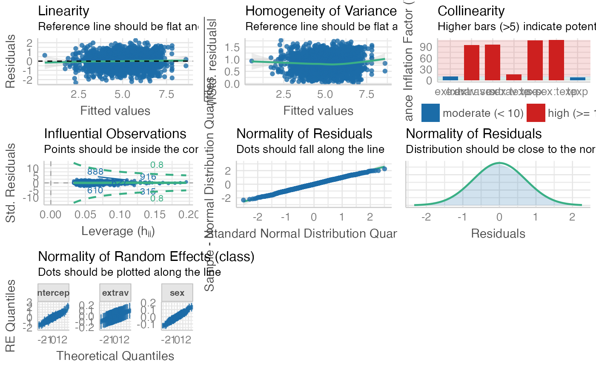

Integrated Function for Mixed Effect Model
model_summary_with_plot.Rd![[Experimental]](figures/lifecycle-experimental.svg)
It will first compute the mixed effect model. It will use either the nlme::lme (Pinheiro, 2006) or the lmerTest::lmer (Kuznetsova, 2017) for linear mixed effect model. It will use lme4::glmer (Bates et al., 2014) for generalized linear mixed effect model. Then, it will graph the interaction using the two_way_interaction_plot or the three_way_interaction_plot function. If you requested simple slope summary, it will uses the interaction::sim_slopes (Long, 2019).
model_summary_with_plot( data, model = NULL, response_variable = NULL, random_effect_factors = NULL, non_random_effect_factors = NULL, two_way_interaction_factor = NULL, three_way_interaction_factor = NULL, cateogrical_var = NULL, id = NULL, streamlined_output = F, graph_label_name = NULL, estimation_method = "REML", opt_control = "bobyqa", na.action = stats::na.omit, return_result = F, print_result = c("model_summary", "plot"), y_lim = NULL, plot_color = F, round = 3, use_package = "lmerTest", simple_slope = F, assumption_plot = F, quite = F )
Arguments
| data | data frame |
|---|---|
| model | lme4 model syntax. Support more complicated model. Note that model_summary will only return fixed effect estimates. |
| response_variable | DV (i.e., outcome variable / response variable). Length of 1. Support |
| random_effect_factors | random effect factors (level-1 variable for HLM people) Factors that need to estimate fixed effect and random effect (i.e., random slope / varying slope based on the id). Support |
| non_random_effect_factors | non-random effect factors (level-2 variable for HLM people). Factors only need to estimate fixed effect. Support |
| two_way_interaction_factor | two-way interaction factors. You need to pass 2+ factor. Support |
| three_way_interaction_factor | three-way interaction factor. You need to pass exactly 3 factors. Specifying three-way interaction factors automatically included all two-way interactions, so please do not specify the two_way_interaction_factor argument. Support |
| cateogrical_var | list. Specify the upper bound and lower bound directly instead of using ± 1 SD from the mean. Passed in the form of |
| id | the nesting variable (e.g. group, time). Length of 1. Support |
| streamlined_output | Only print model estimate and model performance. Default is |
| graph_label_name | optional vector or function. vector of length 2 for two-way interaction graph. vector of length 3 for three-way interaction graph. Vector should be passed in the form of c(response_var, predict_var1, predict_var2, ...). Function should be passed as a switch function (see ?two_way_interaction_plot for an example) |
| estimation_method | character. |
| opt_control | default is |
| na.action | default is |
| return_result | If set to |
| print_result | Default is |
| y_lim | the plot's upper and lower limit for the y-axis. Length of 2. Example: |
| plot_color | If it is set to |
| round | number of digit. |
| use_package | Default is |
| simple_slope | Compute the slope differing with ± 1 SD of the IVs. In the background, it calls interaction:sim_slopes() |
| assumption_plot | Generate an panel of plots that check major assumptions. You can use this if the model summary show violation of assumption (those maybe unreliable due to the use of p-value which is sensitive to the sample size). In the background, it calls performance::check_model() |
| quite | suppress printing output |
Value
return a list of all requested items in the order of model, model_summary, plot
Examples
fit <- model_summary_with_plot( data = popular, response_variable = popular, random_effect_factors = c(extrav), non_random_effect_factors = texp, two_way_interaction_factor = c(extrav, texp), graph_label_name = c("popular", "extraversion", "teacher experience"), id = class )#> Fitting Model with lmer: #> Formula = popular ~ extrav + texp + extrav*texp + (1 + extrav | class)#>#> Model Summary #> Model Type = Linear Mixed Effect Model (fitted using lme4 or lmerTest) #> Outcome = popular #> Predictors = extrav, texp, extrav:texp #> #> #> Model Estimates #> ──────────────────────────────────────────────── #> variable estimate DF p_value sig. #> ──────────────────────────────────────────────── #> (Intercept) -1.211 186.038 0.000 *** #> extrav 0.891 1759.074 0.000 *** #> texp 0.252 165.988 0.000 *** #> extrav:texp -0.027 1724.937 0.000 *** #> ──────────────────────────────────────────────── #> #> Model Performance #> Random effect variances not available. Returned R2 does not account for random effects. #> ─────────────────────────────────────────────────────────────── #> AIC BIC R²_conditional R²_marginal RMSE σ #> ─────────────────────────────────────────────────────────────── #> 5710.769 5755.576 NA 0.415 0.921 0.943 #> ─────────────────────────────────────────────────────────────── #> #> Model Assumption Check #> #> OK: Model is converged #> Warning: Singularity is detected. See ?lme4::isSingular() #> Warning: Autocorrelated residuals detected (p < .001). #> Warning: Non-normality of residuals detected (p = 0.003). #> Unable to check autocorrelation. Try changing na.action to na.omit. #> OK: Error variance appears to be homoscedastic (p = 0.846). #> Cautious: Moderate multicolinearity detected (5 < VIF < 10). Please inspect the following table to identify factors. #> Multicollinearity Table #> ─────────────────────────────── #> Term VIF SE_factor #> ─────────────────────────────── #> extrav 5.281 2.298 #> texp 3.900 1.975 #> extrav:texp 7.082 2.661 #> ───────────────────────────────if (FALSE) { fit <- model_summary_with_plot( data = popular, response_variable = popular, random_effect_factors = c(extrav, sex), non_random_effect_factors = texp, three_way_interaction_factor = c(extrav, sex, texp), # three-way interaction graph_label_name = c("popular", "extraversion", "sex", "teacher experience"), id = class, simple_slope = TRUE, # you can request simple slope assumption_plot = TRUE, # see can also request assumption plot plot_color = TRUE # you can also request the plot in color ) }